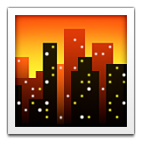
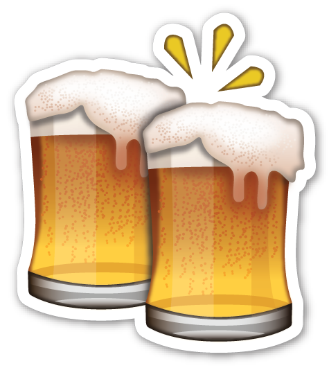

Planning a vacation can be Finding different activities and restaurants might be as simple as putting a search to Google Maps but mapping out what to do and when to do it is a lot easier when you can see all your different desired destination spots at the same time.
For this trip to Japan, I will be spending 1 week in Tokyo and 1 week in Kyoto, with day trips to Osaka, Nara and Arashiyama. To manage time the most efficient way possible I marked all the known spots to visit on a map and categorized them by the type of activiy they are.
On the map below you'll see the following types of markers:
= Lodging
= Shopping
= Nature related activities
 = City related activities
= Entertainment
= Restaurants
 = Bars
To see other projects done in GEOG4046 checkout my porfolio